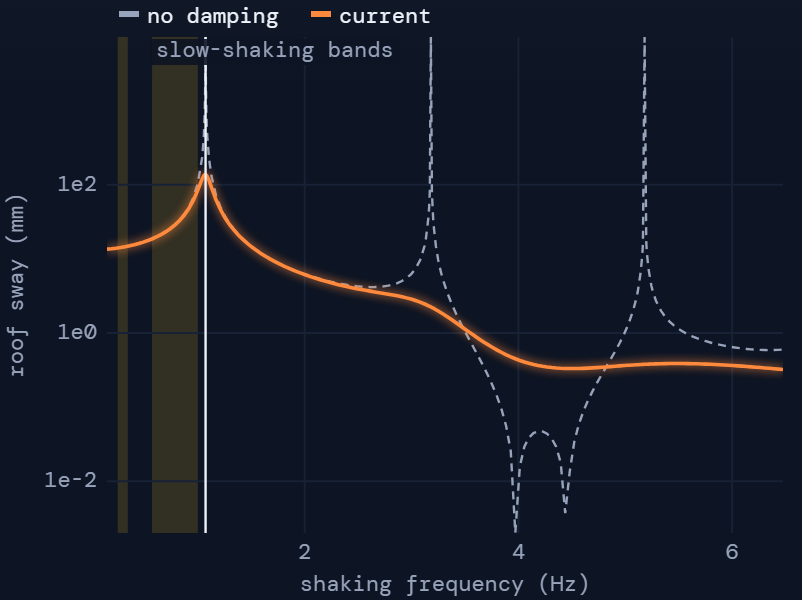
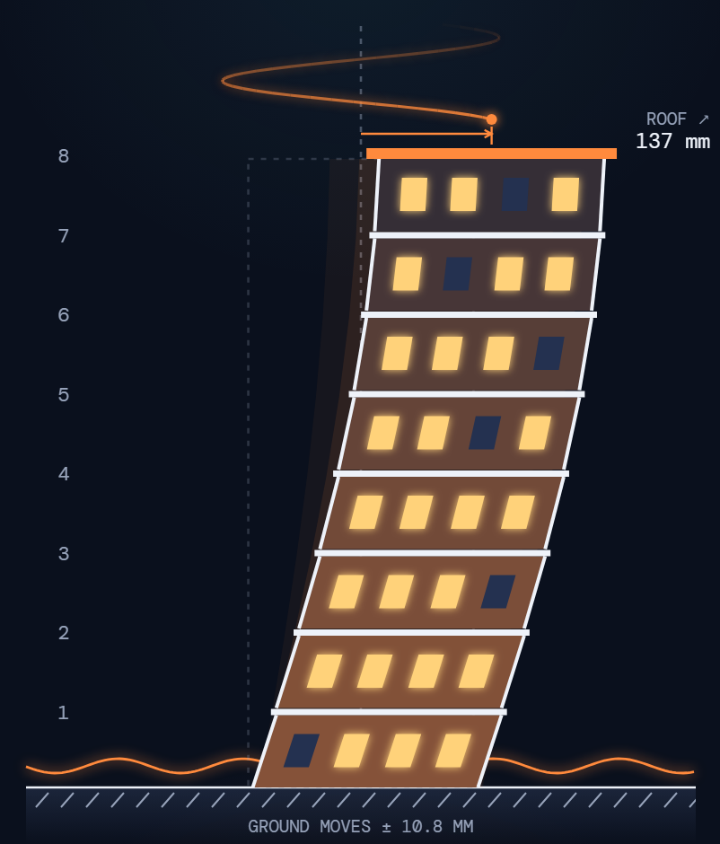
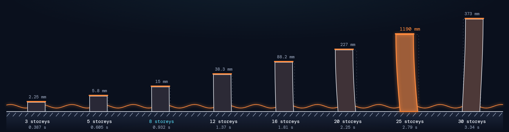

Everything about the site from zero, every method, and the viva questions. Live site: https://krshn-a.github.io/quakesafe/ · Code: https://github.com/Krshn-A/quakesafe · Describes the code at commit 5c0cde2, 28 November 2026.
index.html, find the solver (search for id="solver") and make sure you can walk through each function named here. Every number in this guide was produced by running the solver with the page's default values.| Word | Meaning |
|---|---|
| Model of the building | Each floor is a mass (m). Each storey's columns act as a spring with stiffness (k): the force needed to push one floor sideways by one metre relative to the floor below. |
| Mass matrix M, stiffness matrix K | The masses and stiffnesses of all floors written as matrices. For a frame, K is tridiagonal (only three diagonals are filled), symmetric and positive definite. |
| Degree of freedom | One unknown sideways movement. An 8-storey building has 8; a damper or a base slab adds one each. |
| Natural frequency and period | The rhythm at which the building swings by itself. Period T (seconds per swing) = 1 ÷ frequency. Found from K φ = ω² M φ: an eigenvalue problem. ω² is the eigenvalue, and φ, the mode shape, is the eigenvector. |
| Resonance | If the ground shakes at a natural frequency, the sway becomes very large. |
| Damping | Energy lost in every swing. Without it the sway at resonance would be infinite. The site uses 5% by default. |
| Storey drift | How far one floor moves relative to the floor below. Building codes limit it (here 2% of the storey height). |
| Condition number | How sensitive the answer of A x = b is to small errors. Large means hard to solve accurately. |
| P wave, S wave | An earthquake sends a fast, weak P wave (6.0 km/s here) and a slower, strong S wave (3.5 km/s). The gap between them grows with distance. |
index.html, in three parts: the page (sliders, tables, charts), the solver (all the Python) and the page script (JavaScript that reads the sliders, asks the solver and draws).api(name, json), for example analyse, race, detect, verify. Numbers come back rounded to 7 significant figures.numpy.linalg routine is called, and a test fails if one ever is.| Tab | What you set | What it shows |
|---|---|---|
| Building | Storeys (1 to 40), storey height, mass per floor, column stiffness, system (frame, wall/core, frame + core), bracing, one floor made heavier or one storey weaker, code load values. Five ready-made buildings. | Natural periods and animated mode shapes; sideways forces of the code check as arrows; sway and drift of every storey, coloured green, amber or red; pass or fail; a button that finds the minimum stiffness that passes. |
| Shake | Damping, shaking strength, shaking frequency. Protection: tuned mass damper, base isolation, shock-absorber dampers between floors. | Roof sway against shaking frequency (the resonance curve); the building moving at the chosen frequency with the ground moving under it; condition number of the undamped system; design buttons for the damper and the isolator; a sweep button; a skyline of eight building heights under the same shaking. |
| Detect | Earthquake position (click the map), magnitude, noise, trigger threshold, processing delay, an extra station. | Each station's recording and trigger; distance from the P-to-S gap; the epicentre; magnitude; warning time for each city; a play button that spreads the waves over the map; a damage check from a changed period. |
| Lab | Nothing: it uses the building from the Building tab. | The same problem by every linear solver; error per iteration; the SOR scan; natural frequencies as roots of a determinant; three root-finders compared; a replay of the solvers closing in; Euler's energy growth; regression. |
| Verify | One button. | 87 checks, each with the solver's value, the expected value and the error. |
| Limits | Nothing. | What the model is, where it stops being valid, what is synthetic, and the sources. |


The tabs share one building and one earthquake. When a slider brings a new result, the drawing keeps the old shape for about three seconds as a dashed outline marked BEFORE, with the change in the number beside it.
frame_matrix.wall_flexibility.A storey is flagged as soft if its stiffness is below 70% of the storey above. The page warns that the check is for reference only above about 48 m.
8 storeys of 3.2 m, 300 t per floor, 400 kN/mm per storey, SDS = 0.8, SD1 = 0.4, R = 5, Cd = 4.5.
| Storey | Height (m) | Force F (kN) | Sway u (mm) | ui − ui−1 (mm) | Drift × Cd (mm) | Share of the 64 mm limit |
|---|---|---|---|---|---|---|
| 8 (roof) | 25.6 | 490.5 | 29.53 | 1.23 | 5.5 | 8.6% |
| 7 | 22.4 | 417.0 | 28.31 | 2.27 | 10.2 | 16.0% |
| 6 | 19.2 | 345.7 | 26.04 | 3.13 | 14.1 | 22.0% |
| 5 | 16.0 | 276.9 | 22.91 | 3.83 | 17.2 | 26.9% |
| 4 | 12.8 | 211.1 | 19.08 | 4.35 | 19.6 | 30.6% |
| 3 | 9.6 | 148.8 | 14.73 | 4.73 | 21.3 | 33.2% |
| 2 | 6.4 | 90.9 | 10.00 | 4.95 | 22.3 | 34.8% |
| 1 | 3.2 | 39.1 | 5.05 | 5.05 | 22.7 | 35.5% |
How to read it. The forces grow with height, but the drift is largest at the bottom: the first storey carries the forces of all eight floors (2,020 kN ÷ 400 kN/mm = 5.05 mm). The limit is 2% of 3,200 mm = 64 mm, so the worst storey uses 35.5% of it and the building passes.
harmonic_solve.
| Method | The idea | Where the site uses it | Why this one | Function |
|---|---|---|---|---|
| Gauss elimination with partial pivoting | Subtract multiples of rows to make zeros below the diagonal, then solve from the bottom up (back substitution). Pivoting swaps in the row with the largest entry. | The damped shaking system; the reference answer in the Lab; the epicentre with three stations. | Works for any matrix that is not singular. The shaking matrix is not symmetric. | gauss_solve |
| LU decomposition | Split A into a lower and an upper triangle once. Each new right-hand side then costs only two quick substitutions. | Inverse iteration, which solves with the same K many times; the determinant. | Reuse: factor once, solve many times. | lu_decompose, lu_solve, lu_det |
| Gauss–Jordan inverse | Eliminate above and below the diagonal on [A | I]; what is left on the right is A⁻¹. | Wall stiffness = inverse of the flexibility matrix; every condition number. | Here the inverse itself is needed, not just a solution. | gauss_jordan_inverse |
| Cholesky | For a symmetric positive definite matrix, A = L Lᵀ. Half the work of Gauss. | Static sway of wall and frame + core buildings; the regression's normal equations. | K is symmetric positive definite. | cholesky, cholesky_solve |
| Thomas algorithm | Gauss elimination for a tridiagonal matrix: one forward pass, one backward pass. | Static sway of frame buildings. | Work grows with n, not n³. | thomas |
| Norm and condition number | Row-sum norm: the largest sum of absolute values in a row. Condition number = ‖A‖ × ‖A⁻¹‖. | K (soft storeys, walls); the spikes at resonance; the station layout; the regression. | Says how far to trust a solution. | norm_inf, cond_inf |
| Jacobi | Guess, then update every unknown from the old guess. Repeat. | The Lab solves the static problem K u = F with all three and compares them, with a scan of ω for SOR. The replay shows them closing in. | To compare iterative methods with direct ones on the same problem. | jacobi |
| Gauss–Seidel | The same, but each new value is used at once. | gauss_seidel | ||
| SOR | Gauss–Seidel with each step stretched by a factor ω between 1 and 2. | sor | ||
| Power iteration | Multiply a vector by the matrix again and again; it turns into the eigenvector of the largest eigenvalue. | The highest natural frequency, which sets how fast Euler's method goes wrong. | Simple; needs only multiplication. | power_iteration |
| Inverse iteration with deflation | Solve with K instead of multiplying: this finds the smallest eigenvalue. Remove modes already found from the guess (deflation) to get the next one. | The first three natural periods and mode shapes of every building. | The lowest modes are the ones that matter for a building. | inverse_iteration |
| Bisection | Keep a bracket with a sign change and halve it. | Minimum stiffness; damper mass; isolator stiffness; calibration; damage factor; roots of det(K − λM). | Cannot fail once a sign change is bracketed, and its error is a true bound. | bisection |
| False position | Like bisection, but the new point is where the straight line through the two ends crosses zero. | Minimum stiffness, compared with bisection in the Lab. | To compare speed and behaviour. | false_position |
| Fixed-point iteration | Rewrite the problem as x = g(x) and repeat. Here: new stiffness = old stiffness × (drift ÷ limit). | fixed_point | ||
| Linear regression (least squares) | The line that makes the sum of squared errors smallest. Solved through the normal equations XᵀX a = Xᵀy. | Period against height, T = C hˣ, fitted as a straight line in log-log; the epicentre with more than three stations. | More equations than unknowns. | least_squares, fit_power_law |
| Linear interpolation | A straight line between two known points. | The height exponent k of the code load; putting unevenly timed recordings on an even time grid. | A value is needed between table entries. | interp_linear, resample_uniform |
| Mean and standard deviation | Average, and spread around it (sample form, n − 1). | The trigger; magnitude across stations; the hold-out error of the regression. | — | mean, std |
| Euler's method | Step forward in time using the slope at the start of the step. | Free vibration with no damping, to show error growth. | It is the simplest time-stepping method, and its error is easy to see. | euler_free |
gauss_solve a pivot counts as zero if it is below 10⁻¹⁴ of the largest entry of its own row. The test is per row because rows of K can differ in size by 10¹¹.same_sign(u, v), not u·v > 0, because the product of two tiny numbers underflows to zero.A 3-storey frame with every stiffness equal to 1 and every mass equal to 1, pushed by forces 1, 2 and 3 on its floors. It is small enough to do by hand, and every number below came from the site's own functions.
[ 2 −1 0 ] [ 1 ] K = [ −1 2 −1 ] F = [ 2 ] Solve K u = F. Answer: u = (6, 11, 14). [ 0 −1 1 ] [ 3 ]
Check by physics: the top storey carries 3, the middle 3 + 2 = 5, the bottom 6. With stiffness 1 the storeys stretch by 6, 5 and 3, so the floors move 6, 6 + 5 = 11 and 11 + 3 = 14.
The same elimination, keeping the factors. L holds the factors (with their signs changed), U is what elimination leaves:
[ 1 0 0 ] [ 2 −1 0 ] L = [ −0.5 1 0 ] U = [ 0 1.5 −1 ] det K = 2 × 1.5 × 0.333 = 1 [ 0 −0.667 1 ] [ 0 0 0.333]
To solve: first L y = F (forward substitution), then U u = y (back substitution). A new F needs only these two passes.
K = L Lᵀ with L = [1.414, 0, 0; −0.707, 1.225, 0; 0, −0.816, 0.577]. The first entry is √2; each later one uses the entries already found. It needs K to be symmetric positive definite, which it is.
Exactly the two elimination steps above, but it stores only the three diagonals: sub-diagonal (−1, −1), diagonal (2, 2, 1), super-diagonal (−1, −1). One forward pass and one backward pass, whatever the size.
[ 1 1 1 ] K⁻¹ = [ 1 2 2 ] ‖K‖ = 4 (largest row sum), ‖K⁻¹‖ = 6, condition number = 4 × 6 = 24. [ 1 2 3 ]
The inverse has a meaning: entry (i, j) is how far floor i moves for a unit force on floor j. It is the flexibility matrix. That is why the wall model starts from flexibility and inverts it.
| Method | After sweep 1 | After sweep 2 | After sweep 3 | Sweeps to finish |
|---|---|---|---|---|
| Jacobi | (0.5, 1, 3) | (1, 2.75, 4) | (1.875, 3.5, 5.75) | 100 |
| Gauss–Seidel | (0.5, 1.25, 4.25) | (1.125, 3.688, 6.688) | (2.344, 5.516, 8.516) | 52 |
| SOR, ω = 1.5 | (0.75, 2.062, 7.594) | (1.922, 7.605, 12.111) | (5.493, 10.901, 14.795) | 24 |
f(λ) = −λ³ + 5λ² − 6λ + 1. f(0) = 1 and f(1) = −1, so there is a root between 0 and 1.
| Step | Bisection: midpoint | f | New bracket | False position: point | f |
|---|---|---|---|---|---|
| 1 | 0.5 | −0.875 | [0, 0.5] | 0.5 | −0.875 |
| 2 | 0.25 | −0.203 | [0, 0.25] | 0.2667 | −0.263 |
| 3 | 0.125 | +0.326 | [0.125, 0.25] | 0.2111 | −0.053 |
| 4 | 0.1875 | +0.044 | [0.1875, 0.25] | 0.2004 | −0.010 |
| 5 | 0.21875 | −0.084 | [0.1875, 0.21875] | 0.1985 | −0.002 |
Stiffness multiplier s, updated by s ← s × (drift ÷ limit): 1 → 0.3551 → 0.2116 → 0.1633 → 0.14568 → 0.14568. The last jump lands exactly on the answer. By then the building is so flexible that the code load has reached its lower limit (0.044 SDS) and no longer changes with stiffness, so drift is exactly proportional to 1 ÷ stiffness.
Twelve rows of height and period. Taking logs gives a straight line; least squares gives T = 0.0472 h0.884 with r² = 0.996. Hold-out test: fitted on six rows, the error on the other six is −0.3% ± 6.3%. The condition number of the normal equations is 504.
Each step: u ← u + h v and v ← v − h ω² u. The energy is multiplied by (1 + ω²h²) every step. With h = period ÷ 800 that factor is 1.0000617, and after 4,800 steps (six periods) it has grown to 1.0000617⁴⁸⁰⁰ = 1.34, exactly what the Lab shows.
These are copied from the solver. If you can explain these four, you can explain the rest: the others follow the same patterns.
| Code | What each part does |
|---|---|
def thomas(e, f, g, r):
n = len(f); f = np.array(f, float); r = np.array(r, float)
for k in range(1, n):
if f[k - 1] == 0.0:
raise ZeroDivisionError(...)
w = e[k] / f[k - 1]
f[k] -= w * g[k - 1]
r[k] -= w * r[k - 1]
...
x = np.zeros(n); x[n - 1] = r[n - 1] / f[n - 1]
for k in range(n - 2, -1, -1):
x[k] = (r[k] - g[k] * x[k + 1]) / f[k]
return x |
e, f, g are the sub-diagonal, diagonal and super-diagonal; r is the right-hand side. Forward pass: for each row, w is the factor (entry below the pivot ÷ pivot). Subtracting w × the row above removes the sub-diagonal entry and changes only the diagonal and the right-hand side. Zero pivot: an error, because there is no pivoting. Backward pass: the last unknown directly, then each one from the one after it. Cost: one loop up and one loop down, so the work grows with n. |
def bisection(f, a, b, es=1e-7, maxit=200):
fa = f(a); fb = f(b)
if same_sign(fa, fb):
raise ValueError("no sign change in the bracket")
hist = []; c_old = a
for it in range(1, maxit + 1):
c = 0.5 * (a + b); fc = f(c)
ea = abs(c - c_old) / max(abs(c), 1e-300)
hist.append(ea); c_old = c
if not same_sign(fa, fc):
b = c; fb = fc
else:
a = c; fa = fc
if ea < es or fc == 0.0:
break
return c, it, hist |
f is any function; [a, b] must hold a sign change, or it stops with an error. c is the midpoint. ea is the approximate relative error: how far the midpoint moved, divided by its size. It is kept in hist for the Lab's chart. The choice: if f(a) and f(c) have different signs the root is in [a, c], so b moves to c. Otherwise a moves to c. Stop when ea is below the tolerance es, or the function is exactly zero. Returns the root, the number of steps and the error history. |
def sor(A, b, omega=1.0, es=1e-8, maxit=20000):
A = np.array(A, float); b = np.array(b, float); n = len(b)
x = np.zeros(n); hist = []
blown = DIVERGED * max(float(np.max(np.abs(b / np.diag(A)))), 1e-300)
for it in range(1, maxit + 1):
dmax = 0.0
for i in range(n):
s = A[i] @ x - A[i, i] * x[i]
xi = omega * (b[i] - s) / A[i, i] + (1.0 - omega) * x[i]
dmax = max(dmax, abs(xi - x[i])); x[i] = xi
size = float(np.max(np.abs(x)))
ea = dmax / max(size, 1e-300)
hist.append(ea)
if ea < es or not math.isfinite(ea) or size > blown:
break
return x, it, hist |
x starts at zero. One sweep is the inner loop over the rows. s is the sum of row i times x, leaving out the diagonal term. (b[i] − s) / A[i, i] is the Gauss–Seidel value for unknown i. It is mixed with the old value: ω of the new, (1 − ω) of the old. x[i] = xi at once, so the next row already uses it. That is what makes it Gauss–Seidel and not Jacobi. ea: the largest change in this sweep ÷ the largest value. Stop when ea is small, or the answer has blown up (divergence). gauss_seidel simply calls this with ω = 1. |
lu = lu_decompose(K)
for j in range(min(nm, n)):
x = ...starting guess...
for it in range(1, maxit + 1):
for ph in modes:
x = x - (ph @ (m * x)) * ph
y = lu_solve(lu, m * x)
for ph in modes:
y = y - (ph @ (m * y)) * ph
lam_new = float((y @ (K @ y)) / (y @ (m * y)))
y = y / math.sqrt(y @ (m * y))
done = abs(lam_new - lam) <= tol * abs(lam_new)
x = y; lam = lam_new
if done:
break
lams.append(lam); modes.append(x) |
The core of inverse_iteration. K is factorised once, before the loops. Outer loop: one pass per mode wanted. Deflation: subtract from the guess its part along each mode already found, so it cannot turn into that mode again. y = lu_solve(lu, m * x) solves K y = M x: the "inverse" step. lam_new is the Rayleigh quotient, the estimate of the eigenvalue. Normalise y so that yᵀM y = 1. Stop when the eigenvalue changes by less than 10⁻⁹ of itself. |
| Feature | What it does | What it reuses |
|---|---|---|
| Sweep button (Shake) | Moves the frequency slider from end to end by itself. | The 177 answers the Shake tab already has. |
| Skyline (Shake) | Eight buildings of 3 to 30 storeys, with your floors and columns and no devices, under the same shaking. The one that sways most is highlighted. | build and harmonic_solve, through the call skyline. |
| Play the earthquake (Detect) | P and S rings spread from the earthquake, stations light up when they trigger, the alert goes out and each city counts down. | The arrival times, picks and alert time that detect returns. |
| Replay the solvers (Lab) | Shows Jacobi, Gauss–Seidel and SOR after 1, 2, 3, 4, 6, 9… sweeps, and bisection's bracket shrinking. | The same solver functions run with a growing limit on sweeps, through the call replay. |



test_solver.py runs the same checks, compares with numpy as a referee, and calls every page function on awkward buildings (1 storey, 40 storeys, wall, soft storey).test_accuracy.py measures how many digits are right (93 checks). test_mutants.py puts 56 deliberate mistakes into the solver; the checks catch 55, and the last one gives identical results.| Quantity | Value | Quantity | Value |
|---|---|---|---|
| Inputs | 8 storeys · 3.2 m · 300 t per floor · 400 kN/mm | Code values | SDS 0.8 · SD1 0.4 · R 5 · Cd 4.5 · limit 2% |
| Periods of modes 1, 2, 3 | 0.932 · 0.314 · 0.193 s | Inverse-iteration steps | 6 · 12 · 19 |
| Weight W | 23,544 kN | Load factor Cs and force V | 0.0858 · 2,020 kN |
| Roof sway under the code load | 29.5 mm | Worst drift | 0.71% of storey height = 35.5% of the limit: pass |
| Condition number of K | 144 | Resonance peak (0.05 g, 5% damping) | 137 mm at 1.07 Hz |
| Jacobi · Gauss–Seidel · SOR (ω = 1.70) | 632 · 331 · 46 sweeps | Work: Gauss · Cholesky · Thomas · inverse | 341 · 171 · 64 · 1,024 operations |
| Minimum stiffness that passes | × 0.1457 of the present value | Steps: bisection · false position · fixed-point | 23 · 10 · 5 |
| Damper for a 40% cut | 1.94% of modal mass · 137 → 82 mm | Isolator for a 2.5 s period | 19.2 kN/mm (31 bisection steps) |
| Euler, step = period ÷ 800, 6 periods | energy × 1.34 | Euler, step = period ÷ 50 | energy × 10³⁰ (run stopped) |
| Soft-storey preset (ground storey at 25%) | period 1.23 s · 107% of limit: fail | 30-storey tower preset | period 2.43 s · condition number 2.4 × 10⁶ |
| Default earthquake (magnitude 6, 5 stations) | located to 0.26 km · magnitude 5.98 ± 0.004 | Condition number of the station layout | 37.6, and 10.2 with a station on the Iranian side |
| Alert | 53.5 s + 5 s delay | Warning: Abu Dhabi · Dubai | 46.8 s · 20.5 s |
numpy.linalg routine is called. A test fails if one is.np.outer or @ a black box? They multiply numbers; they do not solve anything. np.outer(f, row) is the "factor × pivot row" step of elimination done for all rows at once.api(name, json). The page sends the building as JSON and gets the results back as JSON.test_solver.py runs the built-in checks and every page call. test_accuracy.py measures digits of accuracy. test_mutants.py breaks the solver in 56 ways and confirms the checks notice.thomas or bisection and explain it line by line.